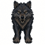
狼 Wolf
深さ 1（50 フィート）／出現 1/1／体力 6d4／速度 3／回避 +1・防護 1d4／攻撃 噛みつき／切り裂き +3,2d3
ぼろぼろに毛の逆立った狼で、オークの狼群の一頭である。
群れ動きが乱れる（1/4）狼
148 体。浅い順に並べてある。深さ 1 が 50 ft で、 モルゴスの玉座は深さ 20（1000 ft）にある。ここに書いた深さは その敵が本来出てくる階で、運が悪ければもっと浅いところでも出会う。 「出現 1/n」は出会いにくさで、数が大きいほど珍しい。 「地上」の印が付いた者は坑道には出てこない—— ヴァラール、エルフの王たち、大鷲、エントである。

深さ 1（50 フィート）／出現 1/1／体力 6d4／速度 3／回避 +1・防護 1d4／攻撃 噛みつき／切り裂き +3,2d3
ぼろぼろに毛の逆立った狼で、オークの狼群の一頭である。
群れ動きが乱れる（1/4）狼
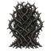
深さ 1（50 フィート）／出現 1/1／体力 4d4／速度 2／回避 -5・防護 1d4／攻撃 棘／切り裂き +5,3d3
『……身をよじる巨大な茨が、もつれ合って這い広がっていた。長く突き刺す棘を持つものもあれば、刃物のように切り裂く鉤棘を持つものもあった。』
動かない心を持たない供 1 体火に弱い恐れない毒に耐える混乱しない眠らない会心を受けない
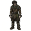
深さ 1（50 フィート）／体力 8d4／速度 2／回避 +0・防護なし
傷だらけの汚れた男で、腰布一枚をまとっているだけだ。首には金属の首輪がはめられ、そこから長い鎖が壁へと伸びている。
雄人間動かない殴らない賢い襲ってこない通常は湧かない
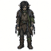
深さ 1（50 フィート）／体力 10d4／速度 2／回避 +0・防護なし
鎖に繋がれたエルフがうなだれている。汚れた髪が肩まで垂れ、目はうつろだ。背と腕には鞭の跡が残っている。
雄エルフ動かない殴らない賢い襲ってこない通常は湧かない
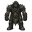
深さ 1（50 フィート）／体力 6d4／速度 2／回避 +8・防護 1d4／攻撃 殴打／打撃 +12,1d6、鞭／武器落とし +8,1d4
モルゴスが先に生まれし者らを歪めて作った、忌まわしい模造の一つである。ぼろぼろの革をまとい、棍棒と鞭を手にしている。
雄扉を開ける扉を壊す通常は湧かないオーク光に弱い賢い錠を開ける角を曲がって追わない
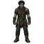
深さ 1（50 フィート）／体力 8d4／速度 2／回避 +0・防護なし
傷だらけの汚れた男が、長い鎖で壁に繋がれている。顔を上げ、油断なくあたりをうかがっている。
雄人間動かない殴らない賢い襲ってこない通常は湧かない
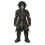
深さ 1（50 フィート）／体力 10d4／速度 2／回避 +0・防護なし
鎖に繋がれたエルフがうずくまっている。汚れた髪が肩まで垂れ、気高い顔には乾いた血がこびりついている。その目はこちらを見据えている。
雄エルフ動かない殴らない賢い襲ってこない通常は湧かない
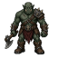
深さ 2（100 フィート）／出現 1/1／体力 7d4／速度 2／回避 +3・防護 1d4／攻撃 殴打／打撃 +2,2d6
モルゴスが先に生まれし者らを歪めて作った、忌まわしい模造の一つである。鎧はほとんど身に着けていないが、残忍な刃を提げている。
雄1/3 で落とす扉を開けるオーク光に弱い賢い供 1 体
深さ 2（100 フィート）／出現 1/2／体力 1d4／速度 4／回避 +7・防護なし／攻撃 つつき／打撃 +8,1d5
オークたちに愛される狩りの鳥で、その爪には鉄のかえりが付けられている。
飛ぶ動きが乱れる（1/2）角を曲がって追わない
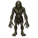
深さ 2（100 フィート）／出現 1/1／体力 5d4／速度 3／回避 +1・防護 2d4／攻撃 引っかき／切り裂き +6,2d4
沼地に棲む邪悪な生き物で、近づいた者の骨を糧にする。
必ず落とす扉を開ける錠を開ける扉を壊す賢い恐れない
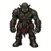
深さ 3（150 フィート）／出現 1/1／体力 6d4／速度 2／回避 +4・防護 1d4／攻撃 殴打／打撃 +3,1d10
モルゴスが先に生まれし者らを歪めて作った、忌まわしい模造の一つである。この惨めな生き物はこちらから距離を取り、仲間の注意を引こうとする。粗末な槍を持っている。
雄1/3 で落とす扉を開ける錠を開けるオーク光に弱い賢い
深さ 3（150 フィート）／出現 1/2／体力 1d4／速度 2／回避 +5・防護なし／攻撃 噛みつき／毒 +5,1d7
孵ったばかりの怪物じみた蜘蛛で、すでに犬ほどの背丈がある。その牙の毒さえなければ、大した脅威でもないのだが……。
蜘蛛角を曲がって追わない群れ毒に耐える
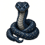
深さ 3（150 フィート）／出現 1/2／体力 2d4／速度 2／回避 +3・防護 4d4／攻撃 噛みつき／打撃 +5,2d5
人の背丈ほどもある蛇で、硬い青い鱗に覆われている。まわりの空気が冷えている。
蛇動きが乱れる（1/2）冷気に耐える火に弱い
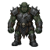
深さ 4（200 フィート）／出現 1/1／体力 8d4／速度 2／回避 +3・防護 2d4／攻撃 殴打／打撃 +3,2d7
モルゴスが先に生まれし者らを歪めて作った、忌まわしい模造の一つである。黒い革をまとい、粗末な剣と盾を構えている。バウグリアの暗黒の軍勢の一兵である。
雄群れ1/3 で落とす扉を開ける扉を壊すオーク光に弱い賢い
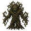
深さ 4（200 フィート）／出現 1/1／体力 8d4／速度 2／回避 -5・防護 2d4／攻撃 棘／混乱 +5,4d3
タウア＝ヌ＝フインの奥深くで最もよく見かける。その棘の毒は狂気をもたらすため、旅人には狼よりも恐れられている。
動かない心を持たない供 1 体火に弱い恐れない毒に耐える混乱しない眠らない会心を受けない
深さ 4（200 フィート）／出現 1/2／体力 1d4／速度 4／回避 +9・防護なし／攻撃 つつき／盲目 +10,1d5
鴉に近しい黒い生き物。むき出しの肉、とりわけ顔や目をついばむ。
供 1 体飛ぶ動きが乱れる（1/4）
深さ 4（200 フィート）／出現 1/3／体力 14d4／速度 1／回避 +6・防護なし／攻撃 噛みつき／毒 +12,2d8
背に卵の塊を負った、巨大で鈍重な蜘蛛。毛むくじゃらの顎は黒い液で濡れている。
蜘蛛角を曲がって追わない毒に耐える
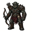
深さ 5（250 フィート）／出現 1/3／体力 7d4／速度 2／回避 +4・防護 1d4／攻撃 殴打／打撃 +5,2d5
モルゴスが先に生まれし者らを歪めて作った、忌まわしい模造の一つである。粗末な剣と弓を携えている。
雄群れ1/3 で落とす扉を開ける扉を壊すオーク光に弱い賢い
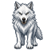
深さ 5（250 フィート）／出現 1/1／体力 8d4／速度 3／回避 +6・防護 1d4／攻撃 噛みつき／切り裂き +8,2d4
北の荒れ地から来た、大きく獰猛な狼。
群れ動きが乱れる（1/4）狼冷気に耐える
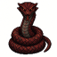
深さ 5（250 フィート）／出現 1/2／体力 2d4／速度 2／回避 +5・防護 4d4／攻撃 噛みつき／打撃 +7,2d6
人の背丈ほどもある蛇で、硬い赤い鱗に覆われている。まわりの空気が熱で揺らいでいる。
蛇動きが乱れる（1/2）火に耐える冷気に弱い
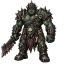
深さ 5（250 フィート）／出現 1/10／体力 12d4／速度 2／回避 +4・防護 3d4／攻撃 殴打／打撃 +6,3d7
オークの一隊を率いる隊長。ゴルゴルは暴力を見せつけて手下を従わせている。
唯一雄護衛 1 体賢い必ず落とす良いアイテムを落とす扉を開ける扉を壊すオーク光に弱い錠を開ける
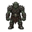
深さ 6（300 フィート）／出現 1/1／体力 9d4／速度 2／回避 +5・防護 2d4／攻撃 殴打／打撃 +3,3d6
モルゴスが先に生まれし者らを歪めて作った、忌まわしい模造の一つである。硬く鞣した革をまとい、斧を手にこちらへ駆けてくる。
雄1/3 で落とす扉を開ける扉を壊すオーク光に弱い供 1 体賢い能力『突撃』（打撃）
深さ 6（300 フィート）／出現 1/2／体力 12d4／速度 3／回避 +7・防護 1d4／攻撃 噛みつき／打撃 +8,2d9
剣のように鋭い顎を持つ、巨大な黒蜘蛛。せわしなく行き来している。
蜘蛛角を曲がって追わない
深さ 6（300 フィート）／出現 1/2／体力 1d4／速度 4／回避 +11・防護なし／攻撃 つつき／切り裂き +12,1d5
鴉の一種で、悪の勢力が斥候として特別に育てあげたものだ。
群れ飛ぶ動きが乱れる（1/4）
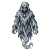
深さ 6（300 フィート）／出現 1/3／体力 2d4／速度 1／回避 +5・防護なし／攻撃 触れる／恐怖 +15
かつては人かエルフであったかもしれない、色褪せた気配。今は死霊術と影が生んだ、実体無きものである。
見えない動きが乱れる（1/2）不死光に弱い冷気に耐える恐れない毒に耐える混乱しない眠らない供 1 体
深さ 7（350 フィート）／出現 1/1／体力 3d4／速度 3／回避 +10・防護 1d4／攻撃 噛みつき／呪縛 +6,1d8
犬ほどの大きさの蜘蛛で、太い剛毛に覆われている。青白い出目に光が反射している。
蜘蛛毒に耐える角を曲がって追わない群れ賢い
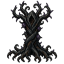
深さ 7（350 フィート）／出現 1/1／体力 8d4／速度 2／回避 -5・防護 2d4／攻撃 棘／打撃 +5,5d3
このねじくれた植物は、まわりの空気から光を吸い取る。
動かない心を持たない火に弱い恐れない毒に耐える混乱しない眠らない会心を受けない
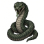
深さ 7（350 フィート）／出現 1/2／体力 2d4／速度 2／回避 +7・防護 4d4／攻撃 噛みつき／打撃 +8,2d7
人の背丈ほどもある蛇で、硬い緑の鱗に覆われている。腐臭がする。
蛇毒に耐える動きが乱れる（1/2）
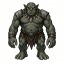
深さ 7（350 フィート）／出現 1/1／体力 14d4／速度 2／回避 +3・防護 2d4／攻撃 殴打／叩きつけ +6,4d5
北方の山々から来た、背の高いトロル。
雄供 1 体1/3 で落とす急速に回復する扉を開ける扉を壊すトロル光に弱い賢い恐れない能力『打ち飛ばし』（打撃）
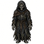
深さ 7（350 フィート）／出現 1/2／体力 4d4／速度 1／回避 +5・防護 3d4／攻撃 殴打／打撃 +9,2d9、触れる／器用さ減 +9
破れて色褪せた経帷子にくるまれた、幽鬼の姿。その財宝はとうの昔に奪われている。
扉を開ける不死光に弱い冷気に耐える賢い角を曲がって追わない恐れない毒に耐える混乱しない眠らない会心が効きにくい
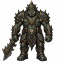
深さ 7（350 フィート）／出現 1/20／体力 13d4／速度 2／回避 +6・防護 3d4／攻撃 殴打／打撃 +11,1d16
オークの偉大な隊長で、エルフの地へ幾度も襲撃を率いた。
唯一雄護衛の一団恐れない扉を開ける扉を壊す錠を開けるオーク賢い1d2 個落とす良いアイテムを落とす決まったアイテムを落とす光に弱い
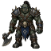
深さ 8（400 フィート）／出現 1/2／体力 11d4／速度 2／回避 +5・防護 3d4／攻撃 殴打／打撃 +6,3d8
オークの群れの勇士。体に合った鎧をまとい、戦斧を振るう。
雄必ず落とす扉を開ける扉を壊すオーク光に弱い賢い
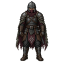
深さ 8（400 フィート）／出現 1/2／体力 10d4／速度 2／回避 +5・防護 3d4／攻撃 殴打／打撃 +7,2d8
しかし人間の裏切りが無かったなら、狼によっても、バルログによっても、竜によっても、モルゴスがその目的を遂げることはなかったであろう。この者は、遠い東方からベレリアンドへ近ごろ渡ってきて、モルゴスの支配下に落ちた民の一人である。
人間雄1/3 で落とす扉を開ける扉を壊す群れ賢い能力『側面取り』（回避）
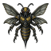
深さ 8（400 フィート）／出現 1/3／体力 2d4／速度 4／回避 +14・防護なし／攻撃 刺す／混乱 +13,1d7
唸りを上げる巨大な雀蜂。その針からは毒が滴っている。
飛ぶ動きが乱れる（1/4）動きが乱れる（1/2）群れ角を曲がって追わない
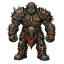
深さ 8（400 フィート）／出現 1/20／体力 15d4／速度 2／回避 +4・防護 4d4／攻撃 殴打／打撃 +8,3d8
オークの巨大な勇士で、厚い黒鎧をまとい、盾と刃こぼれだらけの斧を携えている。顔は傷だらけで、その目は小さく、悪意に満ちている。
唯一雄扉を開ける扉を壊す賢いオーク必ず落とす唯一の供良いアイテムを落とす光に弱い
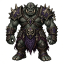
深さ 8（400 フィート）／出現 1/20／体力 10d4／速度 2／回避 +16・防護 2d4／攻撃 殴打／打撃 +16,1d7
小柄で並外れて醜いオーク。黒い革をまとい、短く幅広の刃を、薄気味悪いほど巧みに右手左手と持ち替えている。
唯一雄扉を開ける錠を開ける賢いオーク必ず落とす唯一の供特別なアイテムを落とす光に弱い能力『残酷な一撃』（隠密）
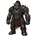
深さ 9（450 フィート）／出現 1/3／体力 10d4／速度 2／回避 +7・防護 3d4／攻撃 殴打／打撃 +10,2d8
鎧をまとい、自信ありげに歩くオーク。その曲刀の刃には刃こぼれがいくつも並んでいる。
雄護衛 1 体1d2 個落とす扉を開ける扉を壊すオーク光に弱い賢い錠を開ける
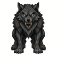
深さ 9（450 フィート）／出現 1/1／体力 10d4／速度 3／回避 +10・防護 1d4／攻撃 噛みつき／切り裂き +12,2d5
狡知に満ちた目をした、大きな狼である。
群れ動きが乱れる（1/4）扉を壊す狼賢い
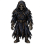
深さ 9（450 フィート）／出現 1/2／体力 4d4／速度 2／回避 +7・防護 3d4／攻撃 殴打／打撃 +11,2d9、触れる／腕力減 +11
染みだらけの経帷子にくるまれた、幽鬼の姿。共に埋葬されたものを守っている。
必ず落とす扉を開ける不死光に弱い冷気に耐える賢い角を曲がって追わない恐れない毒に耐える混乱しない眠らない会心が効きにくい
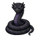
深さ 9（450 フィート）／出現 1/2／体力 2d4／速度 2／回避 +9・防護 4d4／攻撃 噛みつき／打撃 +10,2d8
人の背丈ほどもある蛇で、光を映さぬ硬い鱗に覆われている。
蛇動きが乱れる（1/2）
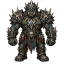
深さ 9（450 フィート）／出現 1/15／体力 15d4／速度 2／回避 +8・防護 3d4／攻撃 殴打／打撃 +10,3d10
モルゴスのオークたちの、筆頭の勇士。
唯一雄護衛 1 体1d2 個落とす良いアイテムを落とす扉を開ける扉を壊すオーク光に弱い賢い
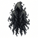
深さ 10（500 フィート）／出現 1/1／体力 6d4／速度 1／回避 +5・防護なし／攻撃 触れる／闇 +6,2d6
広間に広がってゆく、揺らめく闇。その中から、焦がれるように、手招きするように、かすかな声が聞こえてくる。
動きが乱れる（1/4）動きが乱れる（1/2）供 1 体増える不死光に弱い冷気に耐える角を曲がって追わない恐れない毒に耐える混乱しない眠らない会心が効きにくい
深さ 10（500 フィート）／出現 1/1／体力 20d4／速度 2／回避 +7・防護なし／攻撃 噛みつき／毒 +9,2d11
毒で膨れ上がった球形の胴を持つ、巨大な蜘蛛である。
蜘蛛毒に耐える角を曲がって追わない
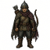
深さ 10（500 フィート）／出現 1/3／体力 9d4／速度 2／回避 +9・防護 2d4／攻撃 殴打／打撃 +9,1d7
しかし人間の裏切りが無かったなら、狼によっても、バルログによっても、竜によっても、モルゴスがその目的を遂げることはなかったであろう。この者は、遠い東方からベレリアンドへ近ごろ渡ってきて、モルゴスの支配下に落ちた民の一人である。
人間雄1/3 で落とす扉を開ける扉を壊す供 1 体賢い
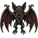
深さ 10（500 フィート）／出現 1/4／体力 2d4／速度 4／回避 +17・防護 1d4／攻撃 噛みつき／体格減 +15,2d5
大型犬ほどもある、羽ばたく蝙蝠。頭は自然の釣り合いを外れて歪み、口からは長く湾曲した牙が垂れている。
飛ぶ動きが乱れる（1/2）角を曲がって追わない
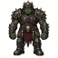
深さ 10（500 フィート）／出現 1/10／体力 15d4／速度 2／回避 +9・防護 4d4／攻撃 殴打／打撃 +15,2d9、鞭／武器落とし +12,2d4
この巨大なオークの目に宿る残忍さは、長年にわたり黒き敵の寵を保ってきた知恵を覆い隠している。
唯一雄護衛の一団賢い1d2 個落とす特別なアイテムを落とす扉を開ける扉を壊すオーク光に弱い錠を開ける
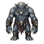
深さ 11（550 フィート）／出現 1/1／体力 16d4／速度 2／回避 +7・防護 2d4／攻撃 殴打／叩きつけ +9,4d6、噛みつき／冷気 +8,2d9
強力な鉤爪の手を持つ、白いトロルである。
雄供 1 体1/3 で落とす急速に回復する扉を開ける扉を壊すトロル光に弱い冷気に耐える火に弱い賢い恐れない能力『打ち飛ばし』（打撃）
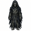
深さ 11（550 フィート）／出現 1/100／体力 4d4／速度 2／回避 +8・防護 3d4／攻撃 殴打／打撃 +13,2d9、触れる／気品減 +13
経帷子をまとった幽鬼の姿。解き放たれることもできぬまま、自らの埋葬室に住まっている。
必ず落とす扉を開ける通常は湧かない不死光に弱い冷気に耐える賢い角を曲がって追わない恐れない毒に耐える混乱しない眠らない会心が効きにくい
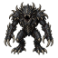
深さ 11（550 フィート）／出現 1/5／体力 10d4／速度 2／回避 +11・防護 1d4／攻撃 噛みつき／呪縛 +10,2d9
墨のように黒い迷宮の闇の中で、こちらを待ち構えている。全身が爪と牙だけでできているように見える。
扉を壊す目が悪い恐れない光に弱い
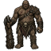
深さ 11（550 フィート）／出現 1/1／体力 30d4／速度 2／回避 +5・防護 1d4／攻撃 殴打／打撃 +6,4d9
人の三倍の背丈を持つ大男。粗末な大棍棒で武装している。
必ず落とす扉を開ける扉を壊す賢い
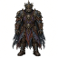
深さ 11（550 フィート）／出現 1/10／体力 14d4／速度 2／回避 +13・防護 3d4／攻撃 殴打／打撃 +16,2d7
黒のウルファングの息子で、涙尽きざる合戦においてエルフへの裏切りを率いた者。
唯一人間雄必ず落とす護衛 1 体賢い良いアイテムを落とす扉を開ける扉を壊すアイテムを拾う錠を開ける能力『挫きの射』（射撃）
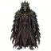
深さ 11（550 フィート）／出現 1/100／体力 8d4／速度 2／回避 +8・防護 3d4／攻撃 触れる／体格減 +15、殴打／打撃 +15,2d9
ノルドールが中つ国へ帰る前の人間の王。モルゴスの黒き力が、その魂をマンドスの館から遠く隔てて、この地に縛りつけている。豪奢な装いをまとい、幽鬼の指で長剣を握っている。
唯一雄賢い必ず落とす特別なアイテムを落とす扉を開ける通常は湧かない不死光に弱い冷気に耐える角を曲がって追わない恐れない毒に耐える混乱しない眠らない会心が効きにくい
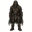
深さ 12（600 フィート）／出現 1/3／体力 8d4／速度 2／回避 +13・防護 1d4／攻撃 殴打／打撃 +12,1d8
しかし人間の裏切りが無かったなら、狼によっても、バルログによっても、竜によっても、モルゴスがその目的を遂げることはなかったであろう。この者は、遠い東方からベレリアンドへ近ごろ渡ってきて、モルゴスの支配下に落ちた民の一人である。
人間雄1/3 で落とす扉を開ける錠を開ける賢い
深さ 12（600 フィート）／出現 1/4／体力 2d4／速度 4／回避 +19・防護 1d4／攻撃 噛みつき／打撃 +17,2d5
甲高く鳴きながら羽ばたく、闇の一片。
飛ぶ動きが乱れる（1/2）角を曲がって追わない光に弱い
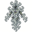
深さ 12（600 フィート）／出現 1/2／体力 5d4／速度 2／回避 +14・防護 2d4／攻撃 殴打／叩きつけ +14,3d5
モルゴスの意志に捻じ曲げられた、風の精霊である。
扉を壊す見えない会心が効きにくい毒に耐える飛ぶ動きが乱れる（1/2）ラウコ賢い
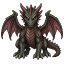
深さ 12（600 フィート）／出現 1/6／体力 10d4／速度 2／回避 +11・防護 1d4／攻撃 噛みつき／炎 +13,2d5
生まれてまだ数か月に過ぎないが、この幼い竜はすでに人ほどの大きさがあり、恐るべき吐息を使い始めている。
扉を壊す竜動きが乱れる（1/4）供 1 体角を曲がって追わない火に耐える冷気に弱い
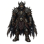
深さ 12（600 フィート）／出現 1/10／体力 15d4／速度 2／回避 +13・防護 4d4／攻撃 殴打／打撃 +19,2d8
ウルファングは東夷の偉大な指導者であり、彼らの裏切りを率いた。彼とその息子たちは、かつて上級エルフに公然と忠誠を誓いながら、密かにモルゴスに雇われていた。
唯一人間雄2d2 個落とす護衛 1 体賢い良いアイテムを落とす扉を開ける扉を壊すアイテムを拾う能力『好機の一撃』（隠密）
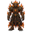
深さ 12（600 フィート）／出現 1/30／体力 28d4／速度 2／回避 +13・防護 4d4／攻撃 殴打／炎 +18,2d12、鞭／武器落とし +14,3d6
力の悪鬼ヴァララウカールは、モルゴスの下僕の中でも最も強大な部類であり、広く恐れられている。目の前に立つのは夜の焔ドゥルイン、火と影に包まれた巨大な姿である。炎の剣と鞭を振るう。
唯一雄賢い光る1d2 個落とす必ず落とす特別なアイテムを落とす恐れない扉を壊すラウコ火に耐える冷気に弱い
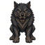
深さ 13（650 フィート）／出現 1/1／体力 12d4／速度 3／回避 +14・防護 2d4／攻撃 引っかき／切り裂き +16,3d5、噛みつき／毒 +13,2d9
ただの狼ではない。あの燃える目の奥には、なにか悪意ある霊が潜んでいる。
動きが乱れる（1/4）扉を開ける扉を壊す狼供 1 体賢い
深さ 13（650 フィート）／出現 1/1／体力 14d4／速度 3／回避 +10・防護 1d4／攻撃 噛みつき／盲目 +11,2d9
影をまとった、大きな黒蜘蛛である。
蜘蛛毒に耐える光に弱い角を曲がって追わない
深さ 13（650 フィート）／出現 1/3／体力 3d4／速度 2／回避 +13・防護 3d4／攻撃 触れる／闇 +16,2d5
部屋にできた闇の染みにしか見えないが、それでもこちらをつけ狙っている。
見えない動きが乱れる（1/4）扉を抜ける不死冷気に耐える光に弱い賢い恐れない毒に耐える混乱しない眠らない会心が効きにくい
深さ 13（650 フィート）／出現 1/3／体力 8d4／速度 2／回避 +9・防護 5d4／攻撃 噛みつき／冷気 +13,2d6
輝く青玉の鱗を持つ大蛇。氷のような冷気がまとわりついている。
蛇色が変わる動きが乱れる（1/4）冷気に耐える火に弱い
深さ 13（650 フィート）／出現 1/10／体力 35d4／速度 2／回避 +9・防護 1d4／攻撃 殴打／冷気 +10,4d9
冬と北の果ての巨人として知られる。巨人の中でも背が高く、その名は多くの国で呪われている。
1d2 個落とす良いアイテムを落とす扉を開ける扉を壊す冷気に耐える唯一雄賢い
深さ 14（700 フィート）／出現 1/3／体力 8d4／速度 2／回避 +10・防護 5d4／攻撃 噛みつき／炎 +14,2d6
輝く紅玉の鱗を持つ大蛇。激しい熱を放っている。
蛇色が変わる動きが乱れる（1/4）火に耐える冷気に弱い
深さ 14（700 フィート）／出現 1/4／体力 14d4／速度 1／回避 +13・防護 2d4／攻撃 引っかき／酸 +18,3d10
床を這いずり、こちらへにじり寄ってくる。捕まる様を思い浮かべるだけで心が引き裂かれる。
扉を壊す恐れない光に弱い
深さ 14（700 フィート）／出現 1/1／体力 10d4／速度 2／回避 +14・防護 2d4／攻撃 殴打／冷気 +15,2d8
かろうじて人の形をしたこの者のまわりには、冷気が漂っている。手には冷たく光る刃を握っている。
扉を壊す賢い冷気に耐える火に弱いラウコ
深さ 14（700 フィート）／出現 1/20／体力 32d4／速度 2／回避 +15・防護 4d4／攻撃 殴打／炎 +20,3d10、鞭／武器落とし +16,3d8
バルログを『恐怖の悪鬼』と呼ぶ者もいるが、デルサウルほどの恐れを呼ぶ者はいない。その身のまわりの空気そのものが、脅威に満ちている。
唯一雄賢い光る1d2 個落とす必ず落とす特別なアイテムを落とす恐れない扉を壊すラウコ火に耐える冷気に弱い
深さ 14（700 フィート）／出現 1/30／体力 40d4／速度 2／回避 +11・防護 1d4／攻撃 殴打／打撃 +15,3d13
夏と南の巨人として知られ、大樹のようにこちらを見下ろしてそびえ立つ。右手には、これまで見たこともないほど長い剣を握っている。
1d2 個落とす良いアイテムを落とす決まったアイテムを落とす扉を開ける扉を壊す唯一雄賢い
深さ 15（750 フィート）／出現 1/1／体力 18d4／速度 2／回避 +11・防護 2d4／攻撃 殴打／叩きつけ +13,4d7、噛みつき／切り裂き +12,2d11
トロルの中でも荒々しい大物で、大地の底そのものから這い出てきたかのようだ。
雄供 1 体1/3 で落とす急速に回復する扉を開ける扉を壊すトロル光に弱い賢い恐れない能力『打ち飛ばし』（打撃）
深さ 15（750 フィート）／出現 1/3／体力 8d4／速度 2／回避 +11・防護 5d4／攻撃 噛みつき／毒 +15,2d6
輝く翠玉の鱗を持つ大蛇。有毒の靄がまとわりついている。
蛇色が変わる動きが乱れる（1/4）毒に耐える
深さ 15（750 フィート）／出現 1/6／体力 12d4／速度 2／回避 +14・防護 3d4／攻撃 触れる／飢え +25
虚無でできたかのような姿。奇妙に人めいた形が影に包まれている。こちらへ手を伸ばしてくる。
不死冷気に耐える賢い光に弱い恐れない毒に耐える混乱しない眠らない会心が効きにくい扉を開ける
深さ 15（750 フィート）／出現 1/1／体力 8d4／速度 3／回避 +15・防護 1d4／攻撃 引っかき／切り裂き +18,1d9
大きな猫が人のように立ち上がったかのようだ。その長く鎌のような爪が生まれつきのものかどうかは判らない。驚くべき速さと身のこなしで動く。
群れ扉を開ける錠を開ける扉を壊す賢い1/3 で落とす能力『位置交換』（隠密）
深さ 16（800 フィート）／出現 1/3／体力 8d4／速度 2／回避 +12・防護 5d4／攻撃 噛みつき／闇 +16,2d6
暗く煌めく紫水晶の鱗を持つ大蛇。近づくにつれて影が濃くなる。
蛇動きが乱れる（1/4）光に弱い色が変わる
深さ 16（800 フィート）／出現 1/2／体力 10d4／速度 2／回避 +12・防護 4d4／攻撃 殴打／粉砕 +11,4d6
アングバンドを刻み出した岩そのものが、いまこちらに立ち向かってくるかのようだ。
扉を壊す壁を掘る石ラウコ賢い冷気に耐える火に耐える毒に耐える会心が効きにくい
深さ 16（800 フィート）／出現 1/5／体力 10d4／速度 4／回避 -5・防護 8d4／攻撃 引っかき／切り裂き +16,3d9
『彫り出されたトロルのごとき巨大な影が、そこに立ち並んでいた。砕けた岩から削り出され、人の似姿をあざける形へと。怪異にして脅かすもの、葬られしもの。跳ねては消える気まぐれな光の中で、曲がり角のたびに黙して立ち現れた。』
見えていない間だけ動く冷気に耐える火に耐える石扉を開ける扉を壊す心を持たない恐れない毒に耐える混乱しない眠らない会心を受けない
深さ 16（800 フィート）／出現 1/6／体力 30d4／速度 2／回避 +11・防護 2d4／攻撃 引っかき／打撃 +16,3d11、噛みつき／切り裂き +12,2d21
すべての竜が火の賜物を持つわけではない。だがそれも大して要りはしない――打ち払う尾、巨大な爪、鋭い牙、そして人を惑わす目があるのだから……。
1d2 個落とす良いアイテムを落とす賢い角を曲がって追わない扉を壊す竜
深さ 16（800 フィート）／出現 1/15／体力 12d4／速度 3／回避 +20・防護 1d4／攻撃 引っかき／切り裂き +25,1d11
この猫は他の者より年老いて、より狡猾に見える。長らくテヴィルドの砦の入口を守ってきた。
護衛 1 体唯一雄扉を開ける扉を壊す賢い必ず落とす錠を開ける良いアイテムを落とす
深さ 16（800 フィート）／出現 1/20／体力 36d4／速度 2／回避 +17・防護 4d4／攻撃 殴打／炎 +22,2d14、鞭／武器落とし +18,3d8
猛々しく燃え立つ姿。そのまわりには影の大翼が広がっている。イルーヴァタールの子らの多くにとって、これが最後に見たものとなった。
唯一雄賢い光る1d2 個落とす必ず落とす特別なアイテムを落とす恐れない扉を壊すラウコ火に耐える冷気に弱い
深さ 16（800 フィート）／出現 1/6／体力 8d4／速度 2／回避 +10・防護なし／攻撃 触れる／冷気 +20,2d10、触れる／気品減 +30
実体無く、ぼろをまとった姿で、ほとんど目に見えない。崩れた顔には、二つの暗い落ち窪みが目をなしている。
動きが乱れる（1/4）不死群れ冷気に耐える賢い光に弱い恐れない毒に耐える混乱しない眠らない会心が効きにくい壁を抜ける
深さ 17（850 フィート）／出現 1/1／体力 18d4／速度 2／回避 +14・防護 1d4／攻撃 噛みつき／呪縛 +16,2d13
この大蜘蛛は、不光のウンゴリアントがエレド・ゴルゴロスの山中で産んだ一腹の一匹である。北のアングバンドへ渡り、砦の最も暗い底へと這い下りた者もいる。
扉を壊す蜘蛛光に弱い毒に耐える賢い角を曲がって追わない
深さ 17（850 フィート）／出現 1/1／体力 14d4／速度 3／回避 +18・防護 2d4／攻撃 引っかき／切り裂き +20,3d7、噛みつき／毒 +17,2d11
人のような知性に輝く目を持つ、巨大な狼である。
動きが乱れる（1/4）扉を開ける扉を壊す狼供 1 体賢い
深さ 17（850 フィート）／出現 1/3／体力 8d4／速度 2／回避 +13・防護 5d4／攻撃 噛みつき／切り裂き +17,3d6
輝く金剛石の鱗を持つ大蛇。虹色の光を放って煌めいている。
蛇色が変わる動きが乱れる（1/4）火に耐える冷気に耐える毒に耐える
深さ 17（850 フィート）／出現 1/1／体力 8d4／速度 3／回避 +21・防護 1d4／攻撃 引っかき／切り裂き +22,3d5、噛みつき／体格減 +17,2d7
大蝙蝠のように素早く飛び交う。だが蝙蝠の目に、これほどの悪意が宿ることはあるまい。
飛ぶ動きが乱れる（1/4）扉を開ける錠を開ける光に弱い賢い
深さ 17（850 フィート）／出現 1/3／体力 8d4／速度 3／回避 +19・防護 1d4／攻撃 引っかき／切り裂き +20,1d11
影に身を潜める漆黒の猫で、残忍な弓を射るときですら見つけにくい。
見えない扉を開ける錠を開ける扉を壊す賢い必ず落とす供 1 体
深さ 17（850 フィート）／出現 1/30／体力 35d4／速度 2／回避 +14・防護 2d4／攻撃 引っかき／打撃 +20,3d11、噛みつき／切り裂き +17,2d21
床にとぐろを巻く、長くしなやかな蛇。その爪は鋭い。力によってか、狡知によってか、裏切りによってか、若い蛇にしては宝の山が大きい。
唯一雄角を曲がって追わない2d2 個落とす良いアイテムを落とす賢い扉を壊す竜
深さ 17（850 フィート）／出現 1/15／体力 18d4／速度 3／回避 +21・防護 1d4／攻撃 引っかき／切り裂き +28,1d11
猛々しく戦を好む猫で、テヴィルドの家臣として常にその傍らにある。
唯一雄扉を開ける扉を壊す賢い錠を開ける唯一の供1d2 個落とす良いアイテムを落とす
深さ 18（900 フィート）／出現 1/6／体力 30d4／速度 2／回避 +13・防護 2d4／攻撃 引っかき／打撃 +18,3d11、噛みつき／炎 +14,2d21
……大地は震えたが、足音は聞こえなかった。若き竜が渇きを癒したとき、暗い戸口で流れは湯気を上げた。じめついた床で炎は音を立て、彼は赤い火の中に独り死んだ。その骨は熱い泥の中の灰となった。
1d2 個落とす良いアイテムを落とす賢い角を曲がって追わない扉を壊す竜火に耐える冷気に弱い
深さ 18（900 フィート）／出現 1/5／体力 6d4／速度 4／回避 +20・防護 2d4／攻撃 噛みつき／幻覚 +22,2d9
狼ほどの大きさしかないが、はるかに速い。どのような邪な思いつきがこれをこの世に生み出したのか、およそ解しがたい。これ以上近くで見たくはないだろう。
扉を壊す動きが乱れる（1/4）恐れない
深さ 18（900 フィート）／出現 1/4／体力 14d4／速度 2／回避 +13・防護 4d4／攻撃 触れる／闇 +26,2d8
かつては人かエルフであったかもしれない、外套をまとった虚無の姿。今はモルゴスの黒い術によって、その下僕として歩いている。鼻も無いのに空気の匂いを嗅ぎ、あちらこちらへ首を巡らせる。
不死冷気に耐える賢い恐れない毒に耐える混乱しない眠らない会心が効きにくい光に弱い扉を開ける
深さ 18（900 フィート）／出現 1/1／体力 4d4／速度 2／回避 +15・防護 2d4／攻撃 殴打／炎 +26,4d8
純粋な焔の姿で、目を射るほど明るく、その形は捉えがたい。おそらくは太陽を導くアリエンの下位の同族であり、世界がまだ若かったころにメルコールの旗の下へ馳せ参じた者たちの一人である。
扉を壊す賢いラウコ火に耐える冷気に弱い
深さ 18（900 フィート）／出現 1/10／体力 14d4／速度 3／回避 +22・防護 1d4／攻撃 引っかき／切り裂き +26,1d13
残忍な猫の一族の中ですら、その残忍さで名高い。この猛々しい戦士が王族であることに、何の不思議があろうか。
唯一雄扉を開ける扉を壊す賢い錠を開ける唯一の供1d2 個落とす特別なアイテムを落とす能力『残酷な一撃』（隠密）
深さ 18（900 フィート）／出現 1/20／体力 40d4／速度 2／回避 +19・防護 5d4／攻撃 殴打／炎 +24,2d16、鞭／武器落とし +20,3d8
バルログはみなアングバンドの強者と目され、その命は直ちに従われる。だがトゥルカノは真の戦の指揮官であり、ラウカールの軍勢を率いて、その邪悪な主に勝利に次ぐ栄光をもたらしてきた。
唯一雄賢い光る1d2 個落とす必ず落とす特別なアイテムを落とす護衛の一団恐れない扉を壊すラウコ火に耐える冷気に弱い
深さ 19（950 フィート）／出現 1/6／体力 10d4／速度 2／回避 +15・防護 6d4／攻撃 噛みつき／冷気 +19,2d9
青玉の鱗に覆われた、巨大な蛇の姿。頭から尾まで霜に覆われている。
蛇色が変わる動きが乱れる（1/4）冷気に耐える火に弱い
深さ 19（950 フィート）／出現 1/1／体力 20d4／速度 2／回避 +14・防護 3d4／攻撃 殴打／叩きつけ +18,4d8
トロルの中でも最も大きく頑強な者は、ゴスモグの供回りに取り立てられる。戦のために鍛えられ、黒い鎧と巨大な凶器を与えられている。
群れ1/3 で落とす急速に回復する恐れない扉を開ける扉を壊すトロル光に弱い賢い能力『打ち飛ばし』（打撃）
深さ 19（950 フィート）／出現 1/1／体力 10d4／速度 3／回避 +24・防護 1d4／攻撃 引っかき／切り裂き +25,3d5、噛みつき／腕力体格減 +20,2d9
人ほどの大きさの、悪夢じみた蝙蝠の姿。
飛ぶ動きが乱れる（1/4）扉を開ける錠を開ける光に弱い賢い
深さ 19（950 フィート）／出現 1/1／体力 70d4／速度 1／回避 +7・防護 6d4／攻撃 押し潰し／酸 +17,5d10
『ドワーフの掘った最も深い坑道の、はるか、はるか下で、世界は名も無きものどもに齧られている……。』巨大な地虫のごとく、大地の根を食い進んでゆく。
扉を壊す壁を掘る急速に回復する心を持たない角を曲がって追わない動きが乱れる（1/4）動きが乱れる（1/2）深さ固定
深さ 19（950 フィート）／出現 1/30／体力 35d4／速度 3／回避 +14・防護 2d4／攻撃 引っかき／打撃 +23,3d11、噛みつき／炎 +19,2d21
若さゆえの好奇心を持つ竜。だが若い竜とてなお恐るべき敵であり、この者は大翼を広げて暗い広間を飛び回る。
唯一雄2d2 個落とす良いアイテムを落とす賢い飛ぶ角を曲がって追わない扉を壊す竜火に耐える冷気に弱い
深さ 19（950 フィート）／出現 1/100／体力 15d4／速度 2／回避 +23・防護 5d4／攻撃 殴打／打撃 +33,2d8
父たる黒エルフ、エオルによって『鋭い目』と名づけられた。マエグリンはゴンドリンの王トゥアゴンの謀議に深く与りながら、黒き敵モルゴス・バウグリアに王を売った。いかなる運命の綾が、ついに彼をあの暗き王の深き広間へ導いたのか、誰に言えようか。
唯一エルフ雄1d2 個落とす錠を開ける決まったアイテムを落とす特別なアイテムを落とす扉を開ける扉を壊すアイテムを拾う賢い能力『反撃』（回避）
深さ 20（1000 フィート）／出現 1/3／体力 10d4／速度 2／回避 +16・防護 6d4／攻撃 噛みつき／炎 +20,2d9
紅玉の鱗に覆われた、巨大な蛇の姿。鼻孔からは煙がひとすじ立ちのぼり、まわりの凄まじい熱に息が詰まる。
蛇色が変わる動きが乱れる（1/4）火に耐える冷気に弱い
深さ 20（1000 フィート）／出現 1/6／体力 50d4／速度 2／回避 +13・防護 2d4／攻撃 引っかき／打撃 +21,3d13、噛みつき／切り裂き +16,2d23
竜は成長を止めることがなく、恐ろしいほどの大きさに達する。最も年経た竜は、人の身には測りかねるほど巨大で狡猾である。
2d2 個落とす良いアイテムを落とす賢い角を曲がって追わない扉を壊す竜
深さ 20（1000 フィート）／出現 1/10／体力 10d4／速度 2／回避 -5・防護 8d4
玉座に座す巨大な像のようであった。それぞれが三つの体を繋ぎ合わせ、三つの頭が外へ、内へ、そして門の向こうへと向いていた。頭は禿鷲の顔をしており、大きな膝の上には鉤爪のような手が置かれていた。巨大な石塊から彫り出され、微動だにせぬように見えたが、それでいて彼らは知っていた。恐るべき邪悪な警戒の霊が、その内に宿っていたのだ。彼らは敵を見分けた。姿が見えようと見えまいと、気づかれずに通れる者はいなかった。彼らは入ることも、逃れることも許さなかった。
動かない冷気に耐える火に耐える石目が悪い恐れない毒に耐える混乱しない眠らない会心を受けない
深さ 20（1000 フィート）／出現 1/4／体力 8d4／速度 2／回避 +18・防護 3d4／攻撃 殴打／闇 +18,2d8
闇そのものの精霊であり、イルーヴァタールに叛くメルコールの黒き旗が掲げられたとき、たやすくその側へ靡いた。
扉を壊す賢いラウコ光に弱い
深さ 20（1000 フィート）／出現 1/15／体力 22d4／速度 3／回避 +24・防護 3d4／攻撃 引っかき／切り裂き +26,3d9、噛みつき／毒 +23,2d13
ドラウグルインはサウロンに恐るべき親衛を与えている。人の霊を宿した巨大な狼であり、その種族すべての長である。
唯一雄護衛 1 体賢い動きが乱れる（1/4）1d2 個落とす決まったアイテムを落とす扉を開ける扉を壊す狼
深さ 20（1000 フィート）／出現 1/20／体力 44d4／速度 3／回避 +21・防護 5d4／攻撃 殴打／炎 +26,3d12、鞭／武器落とし +22,3d8
炎と闇の双方をまとった、人に似た巨大な姿。残忍な炎の斧を振るい、その大きさからは考えられぬ速さで動く。
唯一雄賢い光る1d2 個落とす必ず落とす特別なアイテムを落とす恐れない扉を壊すラウコ火に耐える冷気に弱い
深さ 21（1050 フィート）／出現 1/3／体力 20d4／速度 2／回避 +19・防護 1d4／攻撃 噛みつき／毒 +22,2d19
ウンゴリアントの一腹の中でも最も年経た一匹で、巨大に膨れた胴からは毒が滴っている。
賢い扉を壊す蜘蛛毒に耐える角を曲がって追わない
深さ 21（1050 フィート）／出現 1/3／体力 10d4／速度 2／回避 +17・防護 6d4／攻撃 噛みつき／毒 +21,2d9
翠玉の鱗に覆われた、巨大な蛇の姿。有毒の靄の雲に包まれている。
蛇色が変わる動きが乱れる（1/4）毒に耐える
深さ 21（1050 フィート）／出現 1/2／体力 12d4／速度 3／回避 +26・防護 1d4／攻撃 引っかき／切り裂き +29,3d7、噛みつき／全能力減 +24,2d9
優美な、人の形をした蝙蝠のようだ。その黒い目は、まわりのすべてを獲物として見ている。
飛ぶ扉を開ける扉を壊す錠を開ける動きが乱れる（1/4）賢い光に弱い
深さ 21（1050 フィート）／出現 1/15／体力 24d4／速度 2／回避 +17・防護 4d4／攻撃 殴打／叩きつけ +17,4d10
山のようなトロルで、錆びた鉄板の鎧をまとっている。恐れられるトロルの親衛兵の一隊を率いている。
唯一護衛 1 体1d2 個落とす良いアイテムを落とす急速に回復する恐れない扉を開ける扉を壊すトロル雄光に弱い賢い能力『天敵』（知覚）能力『打ち飛ばし』（打撃）
深さ 21（1050 フィート）／出現 1/30／体力 60d4／速度 2／回避 +14・防護 2d4／攻撃 引っかき／打撃 +24,3d13、噛みつき／切り裂き +19,2d23
蛇の眼差しがこれほど命取りであるなら、火など何の要があろうか。
唯一雄角を曲がって追わない2d2 個落とす特別なアイテムを落とす賢い扉を壊す竜
深さ 22（1100 フィート）／出現 1/3／体力 10d4／速度 2／回避 +18・防護 6d4／攻撃 噛みつき／闇 +22,2d9
紫水晶の鱗に覆われた、巨大な蛇の姿。影をまとっている。
蛇動きが乱れる（1/4）光に弱い色が変わる
深さ 22（1100 フィート）／出現 1/6／体力 50d4／速度 2／回避 +14・防護 2d4／攻撃 引っかき／打撃 +23,3d13、噛みつき／炎 +18,2d23
最も年経て最も大きな竜は、大きな宝の山を蓄えていることが多い。悪夢のような牙と爪が幅を利かせるアングバンドの底ですら、竜の焔に比べうるものなどあろうか。
2d2 個落とす良いアイテムを落とす賢い角を曲がって追わない扉を壊す竜火に耐える冷気に弱い
深さ 22（1100 フィート）／出現 1/2／体力 4d4／速度 3／回避 +17・防護 4d4／攻撃 呑み込み／幻覚 +27,4d5
アングバンドの底には、数多の煙と奇怪な気が漂い、その少なからぬものが害を成す。だがこれほど生き生きとした悪意をもって動くものは稀である……。
扉を抜ける見えない会心が効きにくい毒に耐える飛ぶ動きが乱れる（1/2）ラウコ賢い
深さ 22（1100 フィート）／出現 1/30／体力 22d4／速度 2／回避 +20・防護 2d4／攻撃 噛みつき／呪縛 +25,2d15
この大蜘蛛にはウンゴリアントの血筋が正しく受け継がれているらしい。まわりの迷宮そのものから光が吸い取られ、彼女はそれを紡いで命取りの巣を織り上げる。
唯一雌角を曲がって追わない賢い扉を壊す蜘蛛光に弱い毒に耐える
深さ 22（1100 フィート）／出現 1/20／体力 48d4／速度 2／回避 +23・防護 5d4／攻撃 殴打／炎 +28,2d18、鞭／武器落とし +24,3d10
炎をまとった巨大な姿。ルングォルシンは燻る目で、悪意に満ちてこちらを見据えている。その立つ迷宮の床は、体の熱で焦げている。
唯一雄賢い光る1d2 個落とす必ず落とす特別なアイテムを落とす恐れない扉を壊すラウコ火に耐える冷気に弱い
深さ 23（1150 フィート）／出現 1/3／体力 10d4／速度 2／回避 +19・防護 6d4／攻撃 噛みつき／切り裂き +23,3d9
金剛石の鱗に覆われた、巨大な蛇の姿。鱗には虹色の光が煌めく。もう一匹を目にするまで生き延びる者は少ない。
蛇色が変わる動きが乱れる（1/4）火に耐える冷気に耐える毒に耐える
深さ 23（1150 フィート）／出現 1/2／体力 100d4／速度 1／回避 +11・防護 3d4／攻撃 噛みつき／毒 +24,6d5
こちらへよろめき進んでくるこの生き物を、何が生み出したのか見当もつかない。もし生き物と呼べるならばの話だが。絶えず自らを喰らいながら、しかも少しも減らずにいるように思える。このようなものをどうすれば殺せるのか、およそ判らない。
扉を壊す急速に回復する恐れない
深さ 23（1150 フィート）／出現 1/6／体力 35d4／速度 3／回避 +17・防護 2d4／攻撃 引っかき／打撃 +29,3d11、噛みつき／炎 +25,2d21
アングバンドの底から翼ある竜どもが現れた。それまで誰も見たことのないものであった。その恐ろしき軍勢の襲来はあまりに突然で、あまりに破滅的だったので、ヴァラールの軍勢は押し返された。竜どもの到来は、大いなる雷と、稲妻と、火の嵐を伴っていたからである。
唯一雄2d2 個落とす特別なアイテムを落とす賢い扉を壊す飛ぶ角を曲がって追わない竜火に耐える冷気に弱い
深さ 23（1150 フィート）／出現 1/3／体力 16d4／速度 4／回避 +30・防護 1d4／攻撃 引っかき／切り裂き +35,3d7、噛みつき／全能力減 +29,2d9
サウロンとモルゴスの間を行き交う筆頭の使者であり、吸血鬼の種族の中でも間違いなく最も恐ろしい。初めは魅惑的に見えるが、その翼と目が正体を露わにする。
唯一雌2d2 個落とす良いアイテムを落とす決まったアイテムを落とす賢い飛ぶ動きが乱れる（1/4）扉を開ける錠を開ける扉を壊す光に弱い
深さ 24（1200 フィート）／出現 1/3／体力 52d4／速度 2／回避 +25・防護 6d4／攻撃 殴打／炎 +30,3d14、鞭／武器落とし +26,3d10
ゴスモグはアングバンドの総大将であり、モルゴスの親衛である。ノルドール・エルフの上級王のうち二人、フェアノールとフィンゴンを討ったことで名高く、戦いで敗れたことがない。炎の鞭と凄まじい火の息をもって、ウンゴリアントの怒りから主を救った。
唯一雄賢い光る1d2 個落とす必ず落とす特別なアイテムを落とす恐れない扉を壊すラウコ火に耐える冷気に弱い
深さ 24（1200 フィート）／出現 1/3／体力 36d4／速度 2／回避 +20・防護 3d4／攻撃 噛みつき／毒 +24,2d21
この巨大で忌まわしい虚無の霊は、途方もない大きさの蜘蛛の姿をしている。生ける光をことごとく膨れた胴へ吸い込み、最も黒い闇を吐き出すため、その身は不光の雲に包まれている。常に飢え渇いており、飢えを凌ぐためなら自らをも食らうであろう。
唯一雌賢い扉を壊す角を曲がって追わない蜘蛛光に弱い毒に耐える
深さ 24（1200 フィート）／出現 1/3／体力 60d4／速度 2／回避 +16・防護 2d4／攻撃 引っかき／打撃 +29,3d15、噛みつき／炎 +24,2d25
見よ、地獄の神の黄金の竜を……。他の竜たちの父にして先祖であり、いまや巨大な大きさにまで育っている。それに比肩するのは、その身のまわりに集めた宝の山の大きさばかりである。
唯一雄3d2 個落とす特別なアイテムを落とす賢い扉を壊す角を曲がって追わない竜火に耐える冷気に弱い
深さ 24（1200 フィート）／出現 1/3／体力 30d4／速度 3／回避 +29・防護 3d4／攻撃 引っかき／切り裂き +31,3d11、噛みつき／毒 +28,2d15
モルゴスの下僕の中で最も強大であり、自らも大軍を率いている。スーあるいはサウロンとも呼ばれ、多くの姿を取ることのできる強力なマイアである。今はもつれた毛と燃える目を持つ巨狼の姿で、こちらの前に現れている。
唯一雄2d2 個落とす特別なアイテムを落とす賢い扉を開ける錠を開ける扉を壊す狼護衛 1 体
深さ 25（1250 フィート）／出現 1/1／体力 160d4／速度 2／回避 +20・防護 5d4／攻撃 殴打／粉砕 +20,6d10
アングバンドの底の主。尽きせぬ怒りに荒れ狂い、この世の光あるもの、善きものすべてを支配しようと永遠に求めている。人が闇を恐れる心の源であり、その邪悪な力で数多の汚らわしい生き物を作り出した。オーク、竜、そしてトロルは彼の最も汚らわしい歪みであり、彼を喜ばせるために世に多くの苦痛と苦しみをもたらしている。右手には冥府の大槌『グロンド』を携えている。悪に歪んだその醜悪な面は鉄の王冠を戴き、三つのシルマリルが永久に彼を灼いている。あの王冠を手に入れねばならない。
唯一討伐対象雄扉を開ける錠を開ける扉を壊す壁を掘る3d2 個落とす特別なアイテムを落とす決まったアイテムを落とす賢い恐れない
深さ 25（1250 フィート）／出現 1/1／体力 30d4／速度 4／回避 +30・防護 2d4／攻撃 噛みつき／毒 +29,2d17
ついに彼らははるか前方に、仄かに揺らめく昼の亡霊を、門の巨大なアーチを見た。そしてそこには新たな恐怖が待ち構えていた。敷居の上に、油断なく、恐ろしげに、鈍い火を新たに灯した目で、カルハロスがそびえ立っていた。待ち受ける破滅そのものだ。その顎は墓穴のように開き、牙はむき出し、舌は燃えていた。目覚めたまま、彼は見張っていた。ちらつく影も、追われる者の姿も、アングバンドから逃れ出ようとする何者も通さぬために。
唯一雄深さ固定賢い狼
深さ 30（1500 フィート）／出現 1/5／速度
唯一雄
深さ 30（1500 フィート）／出現 1/5／速度
唯一雌
深さ 30（1500 フィート）／出現 1/5／速度
唯一雄
深さ 30（1500 フィート）／出現 1/5／速度
唯一雄
深さ 30（1500 フィート）／出現 1/5／速度
唯一雄
深さ 30（1500 フィート）／出現 1/5／速度
深さ 30（1500 フィート）／出現 1/10／速度
唯一雄
深さ 30（1500 フィート）／出現 1/10／速度
雄
深さ 30（1500 フィート）／出現 1/10／速度
雌
深さ 30（1500 フィート）／出現 1/10／速度
唯一雄
深さ 30（1500 フィート）／出現 1/10／速度
唯一雌
深さ 30（1500 フィート）／出現 1/20／速度
唯一雄
深さ 30（1500 フィート）／出現 1/20／速度
唯一雄
深さ 30（1500 フィート）／出現 1/30／速度
唯一雌
深さ 30（1500 フィート）／出現 1/10／速度
唯一雄
深さ 30（1500 フィート）／出現 1/40／速度
唯一雌
深さ 30（1500 フィート）／出現 1/40／速度
唯一雄
深さ 30（1500 フィート）／出現 1/40／速度
唯一雌
深さ 30（1500 フィート）／出現 1/40／速度
唯一雌
深さ 30（1500 フィート）／出現 1/10／速度
唯一雄
深さ 30（1500 フィート）／出現 1/40／速度
唯一雌
深さ 30（1500 フィート）／出現 1/40／速度
唯一雄
深さ 30（1500 フィート）／出現 1/40／速度
唯一雌
深さ 40（2000 フィート）／速度
輝く白衣をまとい、この堕ちた世にあって希望と力の灯火のように見える。
唯一雄